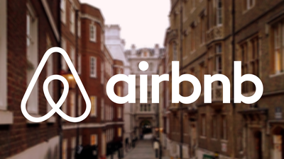
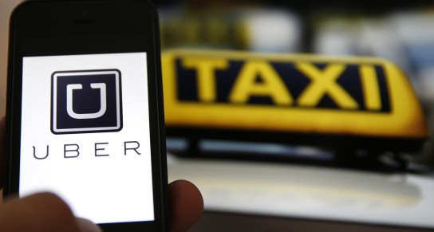

Il 21 ottobre la nostra classe si è recata al Tecnopolo di Reggio
Emilia per partecipare alla quinta giornata di alternanza scuola-lavoro.
Dopo una breve introduzione riguardante i business, sia quelli che stanno facendo successo sia quelli emergenti, si è iniziato a parlare di due aziende nate negli ultimi anni , ma che hanno subito conquistato importanza grazie alla loro idea innovativa : UBER & AIRBNB.
 Uber:
Uber, il servizio di trasporto automobilistico privato che mette in collegamento diretto passeggeri e autisti tramite un'app, è sbarcato ufficialmente in Italia tre anni fa, debuttando a Milano. Da allora il servizio di 'car sharing' è attivo in alcune delle principali città italiane, come Roma e Firenze. La modalità di pagamento è esclusivamente per mezzo carta di credito evitando così il passaggio di denaro contante.
AIRBNB:
Airbnb è una community che permette a chi ha una o più camere disponibili nella propria abitazione di affittarle ai viaggiatori che vogliono conoscere quella determinata città. E' un modo di viaggiare molto più economico e "social" della classica sistemazione in hotel.
Dopo la presentazione di queste aziende gli organizzatori ci hanno chiesto secondo noi quali fossero i 9 mestieri del futuro.
Tutti i gruppi(uno per mestiere) hanno esposto le loro idee.

I 9 mestieri :
-professori freelance online;
-coltivatori urbani;
-pianificatore di fine vita;
-senior career planner;
-specialista sanitario in remoto;
-tecnici per impianti e protesi naturali;
-consulenti per la casa intelligente;
-designer per realta’ virtuale;
-specialisti per stampa 3D.